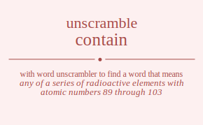

The word found after unscrambling contain means that any of a series of radioactive elements with atomic numbers 89 through 103, .

The word found after unscrambling contain means that any of a series of radioactive elements with atomic numbers 89 through 103, .
You can also find solutions for different combinations of letters in contain like contain contani contian contina contnai contnia conatin conatni conaitn conaint conanti conanit conitan conitna coniatn coniant coninta coninat conntai conntia connati connait connita conniat cotnain cotnani cotnian cotnina cotnnai cotnnia cotanin cotanni cotainn cotainn cotanni cotanin cotinan cotinna cotiann cotiann cotinna cotinan cotnnai cotnnia cotnani cotnain cotnina cotnian coantin coantni coanitn coanint coannti coannit coatnin coatnni coatinn coatinn coatnni coatnin coaintn coainnt coaitnn coaitnn coainnt coaintn coannti coannit coantni coantin coanint coanitn cointan cointna coinatn coinant coinnta coinnat coitnan coitnna coitann coitann coitnna coitnan coiantn coiannt coiatnn coiatnn coiannt coiantn coinnta coinnat cointna cointan coinant coinatn conntai conntia connati connait connita conniat contnai contnia contani contain contina contian conanti conanit conatni conatin conaint conaitn coninta coninat conitna conitan coniant coniatn cnotain cnotani cnotian cnotina cnotnai cnotnia cnoatin cnoatni cnoaitn cnoaint cnoanti cnoanit cnoitan cnoitna cnoiatn cnoiant cnointa cnoinat cnontai cnontia cnonati cnonait cnonita cnoniat cntoain cntoani cntoian cntoina cntonai cntonia cntaoin cntaoni cntaion cntaino cntanoi cntanio cntioan cntiona cntiaon cntiano cntinoa cntinao cntnoai cntnoia cntnaoi cntnaio cntnioa cntniao cnaotin cnaotni cnaoitn cnaoint cnaonti cnaonit cnatoin cnatoni cnation cnatino cnatnoi cnatnio cnaiotn cnaiont cnaiton cnaitno cnainot cnainto cnanoti cnanoit cnantoi cnantio cnaniot cnanito cniotan cniotna cnioatn cnioant cnionta cnionat cnitoan cnitona cnitaon cnitano cnitnoa cnitnao cniaotn cniaont cniaton cniatno cnianot cnianto cninota cninoat cnintoa cnintao cninaot cninato cnnotai cnnotia cnnoati cnnoait cnnoita cnnoiat cnntoai cnntoia cnntaoi cnntaio cnntioa cnntiao cnnaoti cnnaoit cnnatoi cnnatio cnnaiot cnnaito cnniota cnnioat cnnitoa cnnitao cnniaot cnniato ctonain ctonani ctonian ctonina ctonnai ctonnia ctoanin ctoanni ctoainn ctoainn ctoanni ctoanin ctoinan ctoinna ctoiann ctoiann ctoinna ctoinan ctonnai ctonnia ctonani ctonain ctonina ctonian ctnoain ctnoani ctnoian ctnoina ctnonai ctnonia ctnaoin ctnaoni ctnaion ctnaino ctnanoi ctnanio ctnioan ctniona ctniaon ctniano ctninoa ctninao ctnnoai ctnnoia ctnnaoi ctnnaio ctnnioa ctnniao ctaonin ctaonni ctaoinn ctaoinn ctaonni ctaonin ctanoin ctanoni ctanion ctanino ctannoi ctannio ctaionn ctaionn ctainon ctainno ctainon ctainno ctanoni ctanoin ctannoi ctannio ctanion ctanino ctionan ctionna ctioann ctioann ctionna ctionan ctinoan ctinona ctinaon ctinano ctinnoa ctinnao ctiaonn ctiaonn ctianon ctianno ctianon ctianno ctinona ctinoan ctinnoa ctinnao ctinaon ctinano ctnonai ctnonia ctnoani ctnoain ctnoina ctnoian ctnnoai ctnnoia ctnnaoi ctnnaio ctnnioa ctnniao ctnaoni ctnaoin ctnanoi ctnanio ctnaion ctnaino ctniona ctnioan ctninoa ctninao ctniaon ctniano caontin caontni caonitn caonint caonnti caonnit caotnin caotnni caotinn caotinn caotnni caotnin caointn caoinnt caoitnn caoitnn caoinnt caointn caonnti caonnit caontni caontin caonint caonitn canotin canotni canoitn canoint canonti canonit cantoin cantoni cantion cantino cantnoi cantnio caniotn caniont caniton canitno caninot caninto cannoti cannoit canntoi canntio canniot cannito catonin catonni catoinn catoinn catonni catonin catnoin catnoni catnion catnino catnnoi catnnio cationn cationn catinon catinno catinon catinno catnoni catnoin catnnoi catnnio catnion catnino caiontn caionnt caiotnn caiotnn caionnt caiontn cainotn cainont cainton caintno cainnot cainnto caitonn caitonn caitnon caitnno caitnon caitnno cainont cainotn cainnot cainnto cainton caintno canonti canonit canotni canotin canoint canoitn cannoti cannoit canntoi canntio canniot cannito cantoni cantoin cantnoi cantnio cantion cantino caniont caniotn caninot caninto caniton canitno ciontan ciontna cionatn cionant cionnta cionnat ciotnan ciotnna ciotann ciotann ciotnna ciotnan cioantn cioannt cioatnn cioatnn cioannt cioantn cionnta cionnat ciontna ciontan cionant cionatn cinotan cinotna cinoatn cinoant cinonta cinonat cintoan cintona cintaon cintano cintnoa cintnao cinaotn cinaont cinaton cinatno cinanot cinanto cinnota cinnoat cinntoa cinntao cinnaot cinnato citonan citonna citoann citoann citonna citonan citnoan citnona citnaon citnano citnnoa citnnao citaonn citaonn citanon citanno citanon citanno citnona citnoan citnnoa citnnao citnaon citnano ciaontn ciaonnt ciaotnn ciaotnn ciaonnt ciaontn cianotn cianont cianton ciantno ciannot ciannto ciatonn ciatonn ciatnon ciatnno ciatnon ciatnno cianont cianotn ciannot ciannto cianton ciantno cinonta cinonat cinotna cinotan cinoant cinoatn cinnota cinnoat cinntoa cinntao cinnaot cinnato cintona cintoan cintnoa cintnao cintaon cintano cinaont cinaotn cinanot cinanto cinaton cinatno cnontai cnontia cnonati cnonait cnonita cnoniat cnotnai cnotnia cnotani cnotain cnotina cnotian cnoanti cnoanit cnoatni cnoatin cnoaint cnoaitn cnointa cnoinat cnoitna cnoitan cnoiant cnoiatn cnnotai cnnotia cnnoati cnnoait cnnoita cnnoiat cnntoai cnntoia cnntaoi cnntaio cnntioa cnntiao cnnaoti cnnaoit cnnatoi cnnatio cnnaiot cnnaito cnniota cnnioat cnnitoa cnnitao cnniaot cnniato cntonai cntonia cntoani cntoain cntoina cntoian cntnoai cntnoia cntnaoi cntnaio cntnioa cntniao cntaoni cntaoin cntanoi cntanio cntaion cntaino cntiona cntioan cntinoa cntinao cntiaon cntiano cnaonti cnaonit cnaotni cnaotin cnaoint cnaoitn cnanoti cnanoit cnantoi cnantio cnaniot cnanito cnatoni cnatoin cnatnoi cnatnio cnation cnatino cnaiont cnaiotn cnainot cnainto cnaiton cnaitno cnionta cnionat cniotna cniotan cnioant cnioatn cninota cninoat cnintoa cnintao cninaot cninato cnitona cnitoan cnitnoa cnitnao cnitaon cnitano cniaont cniaotn cnianot cnianto cniaton cniatno ocntain ocntani ocntian ocntina ocntnai ocntnia ocnatin ocnatni ocnaitn ocnaint ocnanti ocnanit ocnitan ocnitna ocniatn ocniant ocninta ocninat ocnntai ocnntia ocnnati ocnnait ocnnita ocnniat octnain octnani octnian octnina octnnai octnnia octanin octanni octainn octainn octanni octanin octinan octinna octiann octiann octinna octinan octnnai octnnia octnani octnain octnina octnian ocantin ocantni ocanitn ocanint ocannti ocannit ocatnin ocatnni ocatinn ocatinn ocatnni ocatnin ocaintn ocainnt ocaitnn ocaitnn ocainnt ocaintn ocannti ocannit ocantni ocantin ocanint ocanitn ocintan ocintna ocinatn ocinant ocinnta ocinnat ocitnan ocitnna ocitann ocitann ocitnna ocitnan ociantn ociannt ociatnn ociatnn ociannt ociantn ocinnta ocinnat ocintna ocintan ocinant ocinatn ocnntai ocnntia ocnnati ocnnait ocnnita ocnniat ocntnai ocntnia ocntani ocntain ocntina ocntian ocnanti ocnanit ocnatni ocnatin ocnaint ocnaitn ocninta ocninat ocnitna ocnitan ocniant ocniatn onctain onctani onctian onctina onctnai onctnia oncatin oncatni oncaitn oncaint oncanti oncanit oncitan oncitna onciatn onciant oncinta oncinat oncntai oncntia oncnati oncnait oncnita oncniat ontcain ontcani ontcian ontcina ontcnai ontcnia ontacin ontacni ontaicn ontainc ontanci ontanic ontican onticna ontiacn ontianc ontinca ontinac ontncai ontncia ontnaci ontnaic ontnica ontniac onactin onactni onacitn onacint onacnti onacnit onatcin onatcni onaticn onatinc onatnci onatnic onaictn onaicnt onaitcn onaitnc onainct onaintc onancti onancit onantci onantic onanict onanitc onictan onictna onicatn onicant onicnta onicnat onitcan onitcna onitacn onitanc onitnca onitnac oniactn oniacnt oniatcn oniatnc onianct oniantc onincta onincat onintca onintac oninact oninatc onnctai onnctia onncati onncait onncita onnciat onntcai onntcia onntaci onntaic onntica onntiac onnacti onnacit onnatci onnatic onnaict onnaitc onnicta onnicat onnitca onnitac onniact onniatc otcnain otcnani otcnian otcnina otcnnai otcnnia otcanin otcanni otcainn otcainn otcanni otcanin otcinan otcinna otciann otciann otcinna otcinan otcnnai otcnnia otcnani otcnain otcnina otcnian otncain otncani otncian otncina otncnai otncnia otnacin otnacni otnaicn otnainc otnanci otnanic otnican otnicna otniacn otnianc otninca otninac otnncai otnncia otnnaci otnnaic otnnica otnniac otacnin otacnni otacinn otacinn otacnni otacnin otancin otancni otanicn otaninc otannci otannic otaicnn otaicnn otaincn otainnc otaincn otainnc otancni otancin otannci otannic otanicn otaninc oticnan oticnna oticann oticann oticnna oticnan otincan otincna otinacn otinanc otinnca otinnac otiacnn otiacnn otiancn otiannc otiancn otiannc otincna otincan otinnca otinnac otinacn otinanc otncnai otncnia otncani otncain otncina otncian otnncai otnncia otnnaci otnnaic otnnica otnniac otnacni otnacin otnanci otnanic otnaicn otnainc otnicna otnican otninca otninac otniacn otnianc oacntin oacntni oacnitn oacnint oacnnti oacnnit oactnin oactnni oactinn oactinn oactnni oactnin oacintn oacinnt oacitnn oacitnn oacinnt oacintn oacnnti oacnnit oacntni oacntin oacnint oacnitn oanctin oanctni oancitn oancint oancnti oancnit oantcin oantcni oanticn oantinc oantnci oantnic oanictn oanicnt oanitcn oanitnc oaninct oanintc oanncti oanncit oanntci oanntic oannict oannitc oatcnin oatcnni oatcinn oatcinn oatcnni oatcnin oatncin oatncni oatnicn oatninc oatnnci oatnnic oaticnn oaticnn oatincn oatinnc oatincn oatinnc oatncni oatncin oatnnci oatnnic oatnicn oatninc oaicntn oaicnnt oaictnn oaictnn oaicnnt oaicntn oainctn oaincnt oaintcn oaintnc oainnct oainntc oaitcnn oaitcnn oaitncn oaitnnc oaitncn oaitnnc oaincnt oainctn oainnct oainntc oaintcn oaintnc oancnti oancnit oanctni oanctin oancint oancitn oanncti oanncit oanntci oanntic oannict oannitc oantcni oantcin oantnci oantnic oanticn oantinc oanicnt oanictn oaninct oanintc oanitcn oanitnc oicntan oicntna oicnatn oicnant oicnnta oicnnat oictnan oictnna oictann oictann oictnna oictnan oicantn oicannt oicatnn oicatnn oicannt oicantn oicnnta oicnnat oicntna oicntan oicnant oicnatn oinctan oinctna oincatn oincant oincnta oincnat ointcan ointcna ointacn ointanc ointnca ointnac oinactn oinacnt oinatcn oinatnc oinanct oinantc oinncta oinncat oinntca oinntac oinnact oinnatc oitcnan oitcnna oitcann oitcann oitcnna oitcnan oitncan oitncna oitnacn oitnanc oitnnca oitnnac oitacnn oitacnn oitancn oitannc oitancn oitannc oitncna oitncan oitnnca oitnnac oitnacn oitnanc oiacntn oiacnnt oiactnn oiactnn oiacnnt oiacntn oianctn oiancnt oiantcn oiantnc oiannct oianntc oiatcnn oiatcnn oiatncn oiatnnc oiatncn oiatnnc oiancnt oianctn oiannct oianntc oiantcn oiantnc oincnta oincnat oinctna oinctan oincant oincatn oinncta oinncat oinntca oinntac oinnact oinnatc ointcna ointcan ointnca ointnac ointacn ointanc oinacnt oinactn oinanct oinantc oinatcn oinatnc oncntai oncntia oncnati oncnait oncnita oncniat onctnai onctnia onctani onctain onctina onctian oncanti oncanit oncatni oncatin oncaint oncaitn oncinta oncinat oncitna oncitan onciant onciatn onnctai onnctia onncati onncait onncita onnciat onntcai onntcia onntaci onntaic onntica onntiac onnacti onnacit onnatci onnatic onnaict onnaitc onnicta onnicat onnitca onnitac onniact onniatc ontcnai ontcnia ontcani ontcain ontcina ontcian ontncai ontncia ontnaci ontnaic ontnica ontniac ontacni ontacin ontanci ontanic ontaicn ontainc onticna ontican ontinca ontinac ontiacn ontianc onacnti onacnit onactni onactin onacint onacitn onancti onancit onantci onantic onanict onanitc onatcni onatcin onatnci onatnic onaticn onatinc onaicnt onaictn onainct onaintc onaitcn onaitnc onicnta onicnat onictna onictan onicant onicatn onincta onincat onintca onintac oninact oninatc onitcna onitcan onitnca onitnac onitacn onitanc oniacnt oniactn onianct oniantc oniatcn oniatnc ncotain ncotani ncotian ncotina ncotnai ncotnia ncoatin ncoatni ncoaitn ncoaint ncoanti ncoanit ncoitan ncoitna ncoiatn ncoiant ncointa ncoinat ncontai ncontia nconati nconait nconita nconiat nctoain nctoani nctoian nctoina nctonai nctonia nctaoin nctaoni nctaion nctaino nctanoi nctanio nctioan nctiona nctiaon nctiano nctinoa nctinao nctnoai nctnoia nctnaoi nctnaio nctnioa nctniao ncaotin ncaotni ncaoitn ncaoint ncaonti ncaonit ncatoin ncatoni ncation ncatino ncatnoi ncatnio ncaiotn ncaiont ncaiton ncaitno ncainot ncainto ncanoti ncanoit ncantoi ncantio ncaniot ncanito nciotan nciotna ncioatn ncioant ncionta ncionat ncitoan ncitona ncitaon ncitano ncitnoa ncitnao nciaotn nciaont nciaton nciatno ncianot ncianto ncinota ncinoat ncintoa ncintao ncinaot ncinato ncnotai ncnotia ncnoati ncnoait ncnoita ncnoiat ncntoai ncntoia ncntaoi ncntaio ncntioa ncntiao ncnaoti ncnaoit ncnatoi ncnatio ncnaiot ncnaito ncniota ncnioat ncnitoa ncnitao ncniaot ncniato noctain noctani noctian noctina noctnai noctnia nocatin nocatni nocaitn nocaint nocanti nocanit nocitan nocitna nociatn nociant nocinta nocinat nocntai nocntia nocnati nocnait nocnita nocniat notcain notcani notcian notcina notcnai notcnia notacin notacni notaicn notainc notanci notanic notican noticna notiacn notianc notinca notinac notncai notncia notnaci notnaic notnica notniac noactin noactni noacitn noacint noacnti noacnit noatcin noatcni noaticn noatinc noatnci noatnic noaictn noaicnt noaitcn noaitnc noainct noaintc noancti noancit noantci noantic noanict noanitc noictan noictna noicatn noicant noicnta noicnat noitcan noitcna noitacn noitanc noitnca noitnac noiactn noiacnt noiatcn noiatnc noianct noiantc noincta noincat nointca nointac noinact noinatc nonctai nonctia noncati noncait noncita nonciat nontcai nontcia nontaci nontaic nontica nontiac nonacti nonacit nonatci nonatic nonaict nonaitc nonicta nonicat nonitca nonitac noniact noniatc ntcoain ntcoani ntcoian ntcoina ntconai ntconia ntcaoin ntcaoni ntcaion ntcaino ntcanoi ntcanio ntcioan ntciona ntciaon ntciano ntcinoa ntcinao ntcnoai ntcnoia ntcnaoi ntcnaio ntcnioa ntcniao ntocain ntocani ntocian ntocina ntocnai ntocnia ntoacin ntoacni ntoaicn ntoainc ntoanci ntoanic ntoican ntoicna ntoiacn ntoianc ntoinca ntoinac ntoncai ntoncia ntonaci ntonaic ntonica ntoniac ntacoin ntaconi ntacion ntacino ntacnoi ntacnio ntaocin ntaocni ntaoicn ntaoinc ntaonci ntaonic ntaicon ntaicno ntaiocn ntaionc ntainco ntainoc ntancoi ntancio ntanoci ntanoic ntanico ntanioc nticoan nticona nticaon nticano nticnoa nticnao ntiocan ntiocna ntioacn ntioanc ntionca ntionac ntiacon ntiacno ntiaocn ntiaonc ntianco ntianoc ntincoa ntincao ntinoca ntinoac ntinaco ntinaoc ntncoai ntncoia ntncaoi ntncaio ntncioa ntnciao ntnocai ntnocia ntnoaci ntnoaic ntnoica ntnoiac ntnacoi ntnacio ntnaoci ntnaoic ntnaico ntnaioc ntnicoa ntnicao ntnioca ntnioac ntniaco ntniaoc nacotin nacotni nacoitn nacoint naconti naconit nactoin nactoni naction nactino nactnoi nactnio naciotn naciont naciton nacitno nacinot nacinto nacnoti nacnoit nacntoi nacntio nacniot nacnito naoctin naoctni naocitn naocint naocnti naocnit naotcin naotcni naoticn naotinc naotnci naotnic naoictn naoicnt naoitcn naoitnc naoinct naointc naoncti naoncit naontci naontic naonict naonitc natcoin natconi natcion natcino natcnoi natcnio natocin natocni natoicn natoinc natonci natonic naticon naticno natiocn nationc natinco natinoc natncoi natncio natnoci natnoic natnico natnioc naicotn naicont naicton naictno naicnot naicnto naioctn naiocnt naiotcn naiotnc naionct naiontc naitcon naitcno naitocn naitonc naitnco naitnoc naincot naincto nainoct nainotc naintco naintoc nancoti nancoit nanctoi nanctio nanciot nancito nanocti nanocit nanotci nanotic nanoict nanoitc nantcoi nantcio nantoci nantoic nantico nantioc nanicot nanicto nanioct naniotc nanitco nanitoc nicotan nicotna nicoatn nicoant niconta niconat nictoan nictona nictaon nictano nictnoa nictnao nicaotn nicaont nicaton nicatno nicanot nicanto nicnota nicnoat nicntoa nicntao nicnaot nicnato nioctan nioctna niocatn niocant niocnta niocnat niotcan niotcna niotacn niotanc niotnca niotnac nioactn nioacnt nioatcn nioatnc nioanct nioantc nioncta nioncat niontca niontac nionact nionatc nitcoan nitcona nitcaon nitcano nitcnoa nitcnao nitocan nitocna nitoacn nitoanc nitonca nitonac nitacon nitacno nitaocn nitaonc nitanco nitanoc nitncoa nitncao nitnoca nitnoac nitnaco nitnaoc niacotn niacont niacton niactno niacnot niacnto niaoctn niaocnt niaotcn niaotnc niaonct niaontc niatcon niatcno niatocn niatonc niatnco niatnoc niancot niancto nianoct nianotc niantco niantoc nincota nincoat ninctoa ninctao nincaot nincato ninocta ninocat ninotca ninotac ninoact ninoatc nintcoa nintcao nintoca nintoac nintaco nintaoc ninacot ninacto ninaoct ninaotc ninatco ninatoc nncotai nncotia nncoati nncoait nncoita nncoiat nnctoai nnctoia nnctaoi nnctaio nnctioa nnctiao nncaoti nncaoit nncatoi nncatio nncaiot nncaito nnciota nncioat nncitoa nncitao nnciaot nnciato nnoctai nnoctia nnocati nnocait nnocita nnociat nnotcai nnotcia nnotaci nnotaic nnotica nnotiac nnoacti nnoacit nnoatci nnoatic nnoaict nnoaitc nnoicta nnoicat nnoitca nnoitac nnoiact nnoiatc nntcoai nntcoia nntcaoi nntcaio nntcioa nntciao nntocai nntocia nntoaci nntoaic nntoica nntoiac nntacoi nntacio nntaoci nntaoic nntaico nntaioc nnticoa nnticao nntioca nntioac nntiaco nntiaoc nnacoti nnacoit nnactoi nnactio nnaciot nnacito nnaocti nnaocit nnaotci nnaotic nnaoict nnaoitc nnatcoi nnatcio nnatoci nnatoic nnatico nnatioc nnaicot nnaicto nnaioct nnaiotc nnaitco nnaitoc nnicota nnicoat nnictoa nnictao nnicaot nnicato nniocta nniocat nniotca nniotac nnioact nnioatc nnitcoa nnitcao nnitoca nnitoac nnitaco nnitaoc nniacot nniacto nniaoct nniaotc nniatco nniatoc tconain tconani tconian tconina tconnai tconnia tcoanin tcoanni tcoainn tcoainn tcoanni tcoanin tcoinan tcoinna tcoiann tcoiann tcoinna tcoinan tconnai tconnia tconani tconain tconina tconian tcnoain tcnoani tcnoian tcnoina tcnonai tcnonia tcnaoin tcnaoni tcnaion tcnaino tcnanoi tcnanio tcnioan tcniona tcniaon tcniano tcninoa tcninao tcnnoai tcnnoia tcnnaoi tcnnaio tcnnioa tcnniao tcaonin tcaonni tcaoinn tcaoinn tcaonni tcaonin tcanoin tcanoni tcanion tcanino tcannoi tcannio tcaionn tcaionn tcainon tcainno tcainon tcainno tcanoni tcanoin tcannoi tcannio tcanion tcanino tcionan tcionna tcioann tcioann tcionna tcionan tcinoan tcinona tcinaon tcinano tcinnoa tcinnao tciaonn tciaonn tcianon tcianno tcianon tcianno tcinona tcinoan tcinnoa tcinnao tcinaon tcinano tcnonai tcnonia tcnoani tcnoain tcnoina tcnoian tcnnoai tcnnoia tcnnaoi tcnnaio tcnnioa tcnniao tcnaoni tcnaoin tcnanoi tcnanio tcnaion tcnaino tcniona tcnioan tcninoa tcninao tcniaon tcniano tocnain tocnani tocnian tocnina tocnnai tocnnia tocanin tocanni tocainn tocainn tocanni tocanin tocinan tocinna tociann tociann tocinna tocinan tocnnai tocnnia tocnani tocnain tocnina tocnian toncain toncani toncian toncina toncnai toncnia tonacin tonacni tonaicn tonainc tonanci tonanic tonican tonicna toniacn tonianc toninca toninac tonncai tonncia tonnaci tonnaic tonnica tonniac toacnin toacnni toacinn toacinn toacnni toacnin toancin toancni toanicn toaninc toannci toannic toaicnn toaicnn toaincn toainnc toaincn toainnc toancni toancin toannci toannic toanicn toaninc toicnan toicnna toicann toicann toicnna toicnan toincan toincna toinacn toinanc toinnca toinnac toiacnn toiacnn toiancn toiannc toiancn toiannc toincna toincan toinnca toinnac toinacn toinanc toncnai toncnia toncani toncain toncina toncian tonncai tonncia tonnaci tonnaic tonnica tonniac tonacni tonacin tonanci tonanic tonaicn tonainc tonicna tonican toninca toninac toniacn tonianc tncoain tncoani tncoian tncoina tnconai tnconia tncaoin tncaoni tncaion tncaino tncanoi tncanio tncioan tnciona tnciaon tnciano tncinoa tncinao tncnoai tncnoia tncnaoi tncnaio tncnioa tncniao tnocain tnocani tnocian tnocina tnocnai tnocnia tnoacin tnoacni tnoaicn tnoainc tnoanci tnoanic tnoican tnoicna tnoiacn tnoianc tnoinca tnoinac tnoncai tnoncia tnonaci tnonaic tnonica tnoniac tnacoin tnaconi tnacion tnacino tnacnoi tnacnio tnaocin tnaocni tnaoicn tnaoinc tnaonci tnaonic tnaicon tnaicno tnaiocn tnaionc tnainco tnainoc tnancoi tnancio tnanoci tnanoic tnanico tnanioc tnicoan tnicona tnicaon tnicano tnicnoa tnicnao tniocan tniocna tnioacn tnioanc tnionca tnionac tniacon tniacno tniaocn tniaonc tnianco tnianoc tnincoa tnincao tninoca tninoac tninaco tninaoc tnncoai tnncoia tnncaoi tnncaio tnncioa tnnciao tnnocai tnnocia tnnoaci tnnoaic tnnoica tnnoiac tnnacoi tnnacio tnnaoci tnnaoic tnnaico tnnaioc tnnicoa tnnicao tnnioca tnnioac tnniaco tnniaoc taconin taconni tacoinn tacoinn taconni taconin tacnoin tacnoni tacnion tacnino tacnnoi tacnnio tacionn tacionn tacinon tacinno tacinon tacinno tacnoni tacnoin tacnnoi tacnnio tacnion tacnino taocnin taocnni taocinn taocinn taocnni taocnin taoncin taoncni taonicn taoninc taonnci taonnic taoicnn taoicnn taoincn taoinnc taoincn taoinnc taoncni taoncin taonnci taonnic taonicn taoninc tancoin tanconi tancion tancino tancnoi tancnio tanocin tanocni tanoicn tanoinc tanonci tanonic tanicon tanicno taniocn tanionc taninco taninoc tanncoi tanncio tannoci tannoic tannico tannioc taiconn taiconn taicnon taicnno taicnon taicnno taiocnn taiocnn taioncn taionnc taioncn taionnc taincon taincno tainocn tainonc tainnco tainnoc taincon taincno tainocn tainonc tainnco tainnoc tanconi tancoin tancnoi tancnio tancion tancino tanocni tanocin tanonci tanonic tanoicn tanoinc tanncoi tanncio tannoci tannoic tannico tannioc tanicon tanicno taniocn tanionc taninco taninoc ticonan ticonna ticoann ticoann ticonna ticonan ticnoan ticnona ticnaon ticnano ticnnoa ticnnao ticaonn ticaonn ticanon ticanno ticanon ticanno ticnona ticnoan ticnnoa ticnnao ticnaon ticnano tiocnan tiocnna tiocann tiocann tiocnna tiocnan tioncan tioncna tionacn tionanc tionnca tionnac tioacnn tioacnn tioancn tioannc tioancn tioannc tioncna tioncan tionnca tionnac tionacn tionanc tincoan tincona tincaon tincano tincnoa tincnao tinocan tinocna tinoacn tinoanc tinonca tinonac tinacon tinacno tinaocn tinaonc tinanco tinanoc tinncoa tinncao tinnoca tinnoac tinnaco tinnaoc tiaconn tiaconn tiacnon tiacnno tiacnon tiacnno tiaocnn tiaocnn tiaoncn tiaonnc tiaoncn tiaonnc tiancon tiancno tianocn tianonc tiannco tiannoc tiancon tiancno tianocn tianonc tiannco tiannoc tincona tincoan tincnoa tincnao tincaon tincano tinocna tinocan tinonca tinonac tinoacn tinoanc tinncoa tinncao tinnoca tinnoac tinnaco tinnaoc tinacon tinacno tinaocn tinaonc tinanco tinanoc tnconai tnconia tncoani tncoain tncoina tncoian tncnoai tncnoia tncnaoi tncnaio tncnioa tncniao tncaoni tncaoin tncanoi tncanio tncaion tncaino tnciona tncioan tncinoa tncinao tnciaon tnciano tnocnai tnocnia tnocani tnocain tnocina tnocian tnoncai tnoncia tnonaci tnonaic tnonica tnoniac tnoacni tnoacin tnoanci tnoanic tnoaicn tnoainc tnoicna tnoican tnoinca tnoinac tnoiacn tnoianc tnncoai tnncoia tnncaoi tnncaio tnncioa tnnciao tnnocai tnnocia tnnoaci tnnoaic tnnoica tnnoiac tnnacoi tnnacio tnnaoci tnnaoic tnnaico tnnaioc tnnicoa tnnicao tnnioca tnnioac tnniaco tnniaoc tnaconi tnacoin tnacnoi tnacnio tnacion tnacino tnaocni tnaocin tnaonci tnaonic tnaoicn tnaoinc tnancoi tnancio tnanoci tnanoic tnanico tnanioc tnaicon tnaicno tnaiocn tnaionc tnainco tnainoc tnicona tnicoan tnicnoa tnicnao tnicaon tnicano tniocna tniocan tnionca tnionac tnioacn tnioanc tnincoa tnincao tninoca tninoac tninaco tninaoc tniacon tniacno tniaocn tniaonc tnianco tnianoc acontin acontni aconitn aconint aconnti aconnit acotnin acotnni acotinn acotinn acotnni acotnin acointn acoinnt acoitnn acoitnn acoinnt acointn aconnti aconnit acontni acontin aconint aconitn acnotin acnotni acnoitn acnoint acnonti acnonit acntoin acntoni acntion acntino acntnoi acntnio acniotn acniont acniton acnitno acninot acninto acnnoti acnnoit acnntoi acnntio acnniot acnnito actonin actonni actoinn actoinn actonni actonin actnoin actnoni actnion actnino actnnoi actnnio actionn actionn actinon actinno actinon actinno actnoni actnoin actnnoi actnnio actnion actnino aciontn acionnt aciotnn aciotnn acionnt aciontn acinotn acinont acinton acintno acinnot acinnto acitonn acitonn acitnon acitnno acitnon acitnno acinont acinotn acinnot acinnto acinton acintno acnonti acnonit acnotni acnotin acnoint acnoitn acnnoti acnnoit acnntoi acnntio acnniot acnnito acntoni acntoin acntnoi acntnio acntion acntino acniont acniotn acninot acninto acniton acnitno aocntin aocntni aocnitn aocnint aocnnti aocnnit aoctnin aoctnni aoctinn aoctinn aoctnni aoctnin aocintn aocinnt aocitnn aocitnn aocinnt aocintn aocnnti aocnnit aocntni aocntin aocnint aocnitn aonctin aonctni aoncitn aoncint aoncnti aoncnit aontcin aontcni aonticn aontinc aontnci aontnic aonictn aonicnt aonitcn aonitnc aoninct aonintc aonncti aonncit aonntci aonntic aonnict aonnitc aotcnin aotcnni aotcinn aotcinn aotcnni aotcnin aotncin aotncni aotnicn aotninc aotnnci aotnnic aoticnn aoticnn aotincn aotinnc aotincn aotinnc aotncni aotncin aotnnci aotnnic aotnicn aotninc aoicntn aoicnnt aoictnn aoictnn aoicnnt aoicntn aoinctn aoincnt aointcn aointnc aoinnct aoinntc aoitcnn aoitcnn aoitncn aoitnnc aoitncn aoitnnc aoincnt aoinctn aoinnct aoinntc aointcn aointnc aoncnti aoncnit aonctni aonctin aoncint aoncitn aonncti aonncit aonntci aonntic aonnict aonnitc aontcni aontcin aontnci aontnic aonticn aontinc aonicnt aonictn aoninct aonintc aonitcn aonitnc ancotin ancotni ancoitn ancoint anconti anconit anctoin anctoni anction anctino anctnoi anctnio anciotn anciont anciton ancitno ancinot ancinto ancnoti ancnoit ancntoi ancntio ancniot ancnito anoctin anoctni anocitn anocint anocnti anocnit anotcin anotcni anoticn anotinc anotnci anotnic anoictn anoicnt anoitcn anoitnc anoinct anointc anoncti anoncit anontci anontic anonict anonitc antcoin antconi antcion antcino antcnoi antcnio antocin antocni antoicn antoinc antonci antonic anticon anticno antiocn antionc antinco antinoc antncoi antncio antnoci antnoic antnico antnioc anicotn anicont anicton anictno anicnot anicnto anioctn aniocnt aniotcn aniotnc anionct aniontc anitcon anitcno anitocn anitonc anitnco anitnoc anincot anincto aninoct aninotc anintco anintoc anncoti anncoit annctoi annctio annciot anncito annocti annocit annotci annotic annoict annoitc anntcoi anntcio anntoci anntoic anntico anntioc annicot annicto annioct anniotc annitco annitoc atconin atconni atcoinn atcoinn atconni atconin atcnoin atcnoni atcnion atcnino atcnnoi atcnnio atcionn atcionn atcinon atcinno atcinon atcinno atcnoni atcnoin atcnnoi atcnnio atcnion atcnino atocnin atocnni atocinn atocinn atocnni atocnin atoncin atoncni atonicn atoninc atonnci atonnic atoicnn atoicnn atoincn atoinnc atoincn atoinnc atoncni atoncin atonnci atonnic atonicn atoninc atncoin atnconi atncion atncino atncnoi atncnio atnocin atnocni atnoicn atnoinc atnonci atnonic atnicon atnicno atniocn atnionc atninco atninoc atnncoi atnncio atnnoci atnnoic atnnico atnnioc aticonn aticonn aticnon aticnno aticnon aticnno atiocnn atiocnn ationcn ationnc ationcn ationnc atincon atincno atinocn atinonc atinnco atinnoc atincon atincno atinocn atinonc atinnco atinnoc atnconi atncoin atncnoi atncnio atncion atncino atnocni atnocin atnonci atnonic atnoicn atnoinc atnncoi atnncio atnnoci atnnoic atnnico atnnioc atnicon atnicno atniocn atnionc atninco atninoc aicontn aiconnt aicotnn aicotnn aiconnt aicontn aicnotn aicnont aicnton aicntno aicnnot aicnnto aictonn aictonn aictnon aictnno aictnon aictnno aicnont aicnotn aicnnot aicnnto aicnton aicntno aiocntn aiocnnt aioctnn aioctnn aiocnnt aiocntn aionctn aioncnt aiontcn aiontnc aionnct aionntc aiotcnn aiotcnn aiotncn aiotnnc aiotncn aiotnnc aioncnt aionctn aionnct aionntc aiontcn aiontnc aincotn aincont aincton ainctno aincnot aincnto ainoctn ainocnt ainotcn ainotnc ainonct ainontc aintcon aintcno aintocn aintonc aintnco aintnoc ainncot ainncto ainnoct ainnotc ainntco ainntoc aitconn aitconn aitcnon aitcnno aitcnon aitcnno aitocnn aitocnn aitoncn aitonnc aitoncn aitonnc aitncon aitncno aitnocn aitnonc aitnnco aitnnoc aitncon aitncno aitnocn aitnonc aitnnco aitnnoc aincont aincotn aincnot aincnto aincton ainctno ainocnt ainoctn ainonct ainontc ainotcn ainotnc ainncot ainncto ainnoct ainnotc ainntco ainntoc aintcon aintcno aintocn aintonc aintnco aintnoc anconti anconit ancotni ancotin ancoint ancoitn ancnoti ancnoit ancntoi ancntio ancniot ancnito anctoni anctoin anctnoi anctnio anction anctino anciont anciotn ancinot ancinto anciton ancitno anocnti anocnit anoctni anoctin anocint anocitn anoncti anoncit anontci anontic anonict anonitc anotcni anotcin anotnci anotnic anoticn anotinc anoicnt anoictn anoinct anointc anoitcn anoitnc anncoti anncoit annctoi annctio annciot anncito annocti annocit annotci annotic annoict annoitc anntcoi anntcio anntoci anntoic anntico anntioc annicot annicto annioct anniotc annitco annitoc antconi antcoin antcnoi antcnio antcion antcino antocni antocin antonci antonic antoicn antoinc antncoi antncio antnoci antnoic antnico antnioc anticon anticno antiocn antionc antinco antinoc anicont anicotn anicnot anicnto anicton anictno aniocnt anioctn anionct aniontc aniotcn aniotnc anincot anincto aninoct aninotc anintco anintoc anitcon anitcno anitocn anitonc anitnco anitnoc icontan icontna iconatn iconant iconnta iconnat icotnan icotnna icotann icotann icotnna icotnan icoantn icoannt icoatnn icoatnn icoannt icoantn iconnta iconnat icontna icontan iconant iconatn icnotan icnotna icnoatn icnoant icnonta icnonat icntoan icntona icntaon icntano icntnoa icntnao icnaotn icnaont icnaton icnatno icnanot icnanto icnnota icnnoat icnntoa icnntao icnnaot icnnato ictonan ictonna ictoann ictoann ictonna ictonan ictnoan ictnona ictnaon ictnano ictnnoa ictnnao ictaonn ictaonn ictanon ictanno ictanon ictanno ictnona ictnoan ictnnoa ictnnao ictnaon ictnano icaontn icaonnt icaotnn icaotnn icaonnt icaontn icanotn icanont icanton icantno icannot icannto icatonn icatonn icatnon icatnno icatnon icatnno icanont icanotn icannot icannto icanton icantno icnonta icnonat icnotna icnotan icnoant icnoatn icnnota icnnoat icnntoa icnntao icnnaot icnnato icntona icntoan icntnoa icntnao icntaon icntano icnaont icnaotn icnanot icnanto icnaton icnatno iocntan iocntna iocnatn iocnant iocnnta iocnnat ioctnan ioctnna ioctann ioctann ioctnna ioctnan iocantn iocannt iocatnn iocatnn iocannt iocantn iocnnta iocnnat iocntna iocntan iocnant iocnatn ionctan ionctna ioncatn ioncant ioncnta ioncnat iontcan iontcna iontacn iontanc iontnca iontnac ionactn ionacnt ionatcn ionatnc ionanct ionantc ionncta ionncat ionntca ionntac ionnact ionnatc iotcnan iotcnna iotcann iotcann iotcnna iotcnan iotncan iotncna iotnacn iotnanc iotnnca iotnnac iotacnn iotacnn iotancn iotannc iotancn iotannc iotncna iotncan iotnnca iotnnac iotnacn iotnanc ioacntn ioacnnt ioactnn ioactnn ioacnnt ioacntn ioanctn ioancnt ioantcn ioantnc ioannct ioanntc ioatcnn ioatcnn ioatncn ioatnnc ioatncn ioatnnc ioancnt ioanctn ioannct ioanntc ioantcn ioantnc ioncnta ioncnat ionctna ionctan ioncant ioncatn ionncta ionncat ionntca ionntac ionnact ionnatc iontcna iontcan iontnca iontnac iontacn iontanc ionacnt ionactn ionanct ionantc ionatcn ionatnc incotan incotna incoatn incoant inconta inconat inctoan inctona inctaon inctano inctnoa inctnao incaotn incaont incaton incatno incanot incanto incnota incnoat incntoa incntao incnaot incnato inoctan inoctna inocatn inocant inocnta inocnat inotcan inotcna inotacn inotanc inotnca inotnac inoactn inoacnt inoatcn inoatnc inoanct inoantc inoncta inoncat inontca inontac inonact inonatc intcoan intcona intcaon intcano intcnoa intcnao intocan intocna intoacn intoanc intonca intonac intacon intacno intaocn intaonc intanco intanoc intncoa intncao intnoca intnoac intnaco intnaoc inacotn inacont inacton inactno inacnot inacnto inaoctn inaocnt inaotcn inaotnc inaonct inaontc inatcon inatcno inatocn inatonc inatnco inatnoc inancot inancto inanoct inanotc inantco inantoc inncota inncoat innctoa innctao inncaot inncato innocta innocat innotca innotac innoact innoatc inntcoa inntcao inntoca inntoac inntaco inntaoc innacot innacto innaoct innaotc innatco innatoc itconan itconna itcoann itcoann itconna itconan itcnoan itcnona itcnaon itcnano itcnnoa itcnnao itcaonn itcaonn itcanon itcanno itcanon itcanno itcnona itcnoan itcnnoa itcnnao itcnaon itcnano itocnan itocnna itocann itocann itocnna itocnan itoncan itoncna itonacn itonanc itonnca itonnac itoacnn itoacnn itoancn itoannc itoancn itoannc itoncna itoncan itonnca itonnac itonacn itonanc itncoan itncona itncaon itncano itncnoa itncnao itnocan itnocna itnoacn itnoanc itnonca itnonac itnacon itnacno itnaocn itnaonc itnanco itnanoc itnncoa itnncao itnnoca itnnoac itnnaco itnnaoc itaconn itaconn itacnon itacnno itacnon itacnno itaocnn itaocnn itaoncn itaonnc itaoncn itaonnc itancon itancno itanocn itanonc itannco itannoc itancon itancno itanocn itanonc itannco itannoc itncona itncoan itncnoa itncnao itncaon itncano itnocna itnocan itnonca itnonac itnoacn itnoanc itnncoa itnncao itnnoca itnnoac itnnaco itnnaoc itnacon itnacno itnaocn itnaonc itnanco itnanoc iacontn iaconnt iacotnn iacotnn iaconnt iacontn iacnotn iacnont iacnton iacntno iacnnot iacnnto iactonn iactonn iactnon iactnno iactnon iactnno iacnont iacnotn iacnnot iacnnto iacnton iacntno iaocntn iaocnnt iaoctnn iaoctnn iaocnnt iaocntn iaonctn iaoncnt iaontcn iaontnc iaonnct iaonntc iaotcnn iaotcnn iaotncn iaotnnc iaotncn iaotnnc iaoncnt iaonctn iaonnct iaonntc iaontcn iaontnc iancotn iancont iancton ianctno iancnot iancnto ianoctn ianocnt ianotcn ianotnc ianonct ianontc iantcon iantcno iantocn iantonc iantnco iantnoc ianncot ianncto iannoct iannotc ianntco ianntoc iatconn iatconn iatcnon iatcnno iatcnon iatcnno iatocnn iatocnn iatoncn iatonnc iatoncn iatonnc iatncon iatncno iatnocn iatnonc iatnnco iatnnoc iatncon iatncno iatnocn iatnonc iatnnco iatnnoc iancont iancotn iancnot iancnto iancton ianctno ianocnt ianoctn ianonct ianontc ianotcn ianotnc ianncot ianncto iannoct iannotc ianntco ianntoc iantcon iantcno iantocn iantonc iantnco iantnoc inconta inconat incotna incotan incoant incoatn incnota incnoat incntoa incntao incnaot incnato inctona inctoan inctnoa inctnao inctaon inctano incaont incaotn incanot incanto incaton incatno inocnta inocnat inoctna inoctan inocant inocatn inoncta inoncat inontca inontac inonact inonatc inotcna inotcan inotnca inotnac inotacn inotanc inoacnt inoactn inoanct inoantc inoatcn inoatnc inncota inncoat innctoa innctao inncaot inncato innocta innocat innotca innotac innoact innoatc inntcoa inntcao inntoca inntoac inntaco inntaoc innacot innacto innaoct innaotc innatco innatoc intcona intcoan intcnoa intcnao intcaon intcano intocna intocan intonca intonac intoacn intoanc intncoa intncao intnoca intnoac intnaco intnaoc intacon intacno intaocn intaonc intanco intanoc inacont inacotn inacnot inacnto inacton inactno inaocnt inaoctn inaonct inaontc inaotcn inaotnc inancot inancto inanoct inanotc inantco inantoc inatcon inatcno inatocn inatonc inatnco inatnoc ncontai ncontia nconati nconait nconita nconiat ncotnai ncotnia ncotani ncotain ncotina ncotian ncoanti ncoanit ncoatni ncoatin ncoaint ncoaitn ncointa ncoinat ncoitna ncoitan ncoiant ncoiatn ncnotai ncnotia ncnoati ncnoait ncnoita ncnoiat ncntoai ncntoia ncntaoi ncntaio ncntioa ncntiao ncnaoti ncnaoit ncnatoi ncnatio ncnaiot ncnaito ncniota ncnioat ncnitoa ncnitao ncniaot ncniato nctonai nctonia nctoani nctoain nctoina nctoian nctnoai nctnoia nctnaoi nctnaio nctnioa nctniao nctaoni nctaoin nctanoi nctanio nctaion nctaino nctiona nctioan nctinoa nctinao nctiaon nctiano ncaonti ncaonit ncaotni ncaotin ncaoint ncaoitn ncanoti ncanoit ncantoi ncantio ncaniot ncanito ncatoni ncatoin ncatnoi ncatnio ncation ncatino ncaiont ncaiotn ncainot ncainto ncaiton ncaitno ncionta ncionat nciotna nciotan ncioant ncioatn ncinota ncinoat ncintoa ncintao ncinaot ncinato ncitona ncitoan ncitnoa ncitnao ncitaon ncitano nciaont nciaotn ncianot ncianto nciaton nciatno nocntai nocntia nocnati nocnait nocnita nocniat noctnai noctnia noctani noctain noctina noctian nocanti nocanit nocatni nocatin nocaint nocaitn nocinta nocinat nocitna nocitan nociant nociatn nonctai nonctia noncati noncait noncita nonciat nontcai nontcia nontaci nontaic nontica nontiac nonacti nonacit nonatci nonatic nonaict nonaitc nonicta nonicat nonitca nonitac noniact noniatc notcnai notcnia notcani notcain notcina notcian notncai notncia notnaci notnaic notnica notniac notacni notacin notanci notanic notaicn notainc noticna notican notinca notinac notiacn notianc noacnti noacnit noactni noactin noacint noacitn noancti noancit noantci noantic noanict noanitc noatcni noatcin noatnci noatnic noaticn noatinc noaicnt noaictn noainct noaintc noaitcn noaitnc noicnta noicnat noictna noictan noicant noicatn noincta noincat nointca nointac noinact noinatc noitcna noitcan noitnca noitnac noitacn noitanc noiacnt noiactn noianct noiantc noiatcn noiatnc nncotai nncotia nncoati nncoait nncoita nncoiat nnctoai nnctoia nnctaoi nnctaio nnctioa nnctiao nncaoti nncaoit nncatoi nncatio nncaiot nncaito nnciota nncioat nncitoa nncitao nnciaot nnciato nnoctai nnoctia nnocati nnocait nnocita nnociat nnotcai nnotcia nnotaci nnotaic nnotica nnotiac nnoacti nnoacit nnoatci nnoatic nnoaict nnoaitc nnoicta nnoicat nnoitca nnoitac nnoiact nnoiatc nntcoai nntcoia nntcaoi nntcaio nntcioa nntciao nntocai nntocia nntoaci nntoaic nntoica nntoiac nntacoi nntacio nntaoci nntaoic nntaico nntaioc nnticoa nnticao nntioca nntioac nntiaco nntiaoc nnacoti nnacoit nnactoi nnactio nnaciot nnacito nnaocti nnaocit nnaotci nnaotic nnaoict nnaoitc nnatcoi nnatcio nnatoci nnatoic nnatico nnatioc nnaicot nnaicto nnaioct nnaiotc nnaitco nnaitoc nnicota nnicoat nnictoa nnictao nnicaot nnicato nniocta nniocat nniotca nniotac nnioact nnioatc nnitcoa nnitcao nnitoca nnitoac nnitaco nnitaoc nniacot nniacto nniaoct nniaotc nniatco nniatoc ntconai ntconia ntcoani ntcoain ntcoina ntcoian ntcnoai ntcnoia ntcnaoi ntcnaio ntcnioa ntcniao ntcaoni ntcaoin ntcanoi ntcanio ntcaion ntcaino ntciona ntcioan ntcinoa ntcinao ntciaon ntciano ntocnai ntocnia ntocani ntocain ntocina ntocian ntoncai ntoncia ntonaci ntonaic ntonica ntoniac ntoacni ntoacin ntoanci ntoanic ntoaicn ntoainc ntoicna ntoican ntoinca ntoinac ntoiacn ntoianc ntncoai ntncoia ntncaoi ntncaio ntncioa ntnciao ntnocai ntnocia ntnoaci ntnoaic ntnoica ntnoiac ntnacoi ntnacio ntnaoci ntnaoic ntnaico ntnaioc ntnicoa ntnicao ntnioca ntnioac ntniaco ntniaoc ntaconi ntacoin ntacnoi ntacnio ntacion ntacino ntaocni ntaocin ntaonci ntaonic ntaoicn ntaoinc ntancoi ntancio ntanoci ntanoic ntanico ntanioc ntaicon ntaicno ntaiocn ntaionc ntainco ntainoc nticona nticoan nticnoa nticnao nticaon nticano ntiocna ntiocan ntionca ntionac ntioacn ntioanc ntincoa ntincao ntinoca ntinoac ntinaco ntinaoc ntiacon ntiacno ntiaocn ntiaonc ntianco ntianoc naconti naconit nacotni nacotin nacoint nacoitn nacnoti nacnoit nacntoi nacntio nacniot nacnito nactoni nactoin nactnoi nactnio naction nactino naciont naciotn nacinot nacinto naciton nacitno naocnti naocnit naoctni naoctin naocint naocitn naoncti naoncit naontci naontic naonict naonitc naotcni naotcin naotnci naotnic naoticn naotinc naoicnt naoictn naoinct naointc naoitcn naoitnc nancoti nancoit nanctoi nanctio nanciot nancito nanocti nanocit nanotci nanotic nanoict nanoitc nantcoi nantcio nantoci nantoic nantico nantioc nanicot nanicto nanioct naniotc nanitco nanitoc natconi natcoin natcnoi natcnio natcion natcino natocni natocin natonci natonic natoicn natoinc natncoi natncio natnoci natnoic natnico natnioc naticon naticno natiocn nationc natinco natinoc naicont naicotn naicnot naicnto naicton naictno naiocnt naioctn naionct naiontc naiotcn naiotnc naincot naincto nainoct nainotc naintco naintoc naitcon naitcno naitocn naitonc naitnco naitnoc niconta niconat nicotna nicotan nicoant nicoatn nicnota nicnoat nicntoa nicntao nicnaot nicnato nictona nictoan nictnoa nictnao nictaon nictano nicaont nicaotn nicanot nicanto nicaton nicatno niocnta niocnat nioctna nioctan niocant niocatn nioncta nioncat niontca niontac nionact nionatc niotcna niotcan niotnca niotnac niotacn niotanc nioacnt nioactn nioanct nioantc nioatcn nioatnc nincota nincoat ninctoa ninctao nincaot nincato ninocta ninocat ninotca ninotac ninoact ninoatc nintcoa nintcao nintoca nintoac nintaco nintaoc ninacot ninacto ninaoct ninaotc ninatco ninatoc nitcona nitcoan nitcnoa nitcnao nitcaon nitcano nitocna nitocan nitonca nitonac nitoacn nitoanc nitncoa nitncao nitnoca nitnoac nitnaco nitnaoc nitacon nitacno nitaocn nitaonc nitanco nitanoc niacont niacotn niacnot niacnto niacton niactno niaocnt niaoctn niaonct niaontc niaotcn niaotnc niancot niancto nianoct nianotc niantco niantoc niatcon niatcno niatocn niatonc niatnco niatnoc.
Unscramble Words is registered trademark.